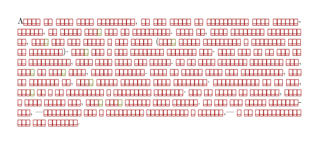

| NOTE: This page is not finished yet |
Please, someone, fill this page !
This page is being reorganized
Using LuaTeX as the processing engine in ConTeXt allows one to directly use fonts installed on the user's system. Instead of converting all fonts into the standard .tfm and .vf formats (as outlined in some My Way documents[1][2]), LuaTeX creates these metric files automatically at run-time. This greatly simplifies font installation in ConTeXt.
How LuaTeX handles system fonts
LuaTeX can use fonts in non-TeX format (e.g. OpenType, TrueType or Type1 format) directly. When ConTeXt processes a file that uses such non-traditional fonts, the actual fonts themselves are loaded in LuaTeX's embedded section of fontforge to extract their metric information. This removes the need for tfm and vf files on your disk, but it is also a somewhat lengthy and often memory-hungry process. Fortunately, the result of that internal preprocessing are also saved inside the texmf cache. Future runs using the same font (not just this file, but all files using that particular font) can then use the cached version of the metrics instead.
Mac OS users should note that the current version of LuaTeX (0.60) has severe problems dealing with the new TrueType collection fonts in Snow Leopard (Mac OS 10.6). The older Mac OS .dfont format works fine nowadays.
Building the font database
You need to specify where the fonts should be looked for, by setting the OSFONTDIR environment variable. On Windows, this might be achieved by running
set OSFONTDIR=c:/windows/fonts/
if the fonts should be found in c:/windows/fonts/. For Unix machines,
export OSFONTDIR="/usr/local/share/fonts;$HOME/.fonts"
indicate that the fonts should be found in both /usr/local/share/fonts and $HOME/.fonts.
The font database will then be automatically generated in the next run of context. You can also generate it manually by typing
mtxrun --script fonts --reload
The output should look like
MTXrun | fontnames: identifying tree font files with suffix otf MTXrun | fontnames: identifying tree font files with suffix OTF MTXrun | fontnames: 331 tree files identified, 332 hash entries added, runtime 7.653 seconds MTXrun | fontnames: identifying tree font files with suffix ttf MTXrun | fontnames: identifying tree font files with suffix TTF MTXrun | fontnames: 17 tree files identified, 14 hash entries added, runtime 4.645 seconds ... MTXrun | fontnames: 94 system files identified, 94 hash entries added, runtime 0.554 seconds MTXrun | fontnames: 3837 files read, 3342 normal and 49 extra entries added, 5 rejected, 3386 valid
If mtxrun has problem finding the mtx-fonts.lua file, it may be necessary to regenerate ConTeXt's file database:
context --generate
Querying the font database
The command
mtxrun --script fonts --list --all --pattern=*
will return the whole entries of the font database as a list, such as
... warnockprobold WarnockPro-Bold E:/Fonts/Warnock Pro/WarnockPro-Bold.otf warnockproboldcapt WarnockPro-BoldCapt E:/Fonts/Warnock Pro/WarnockPro-BoldCapt.otf warnockprobolddisp WarnockPro-BoldDisp E:/Fonts/Warnock Pro/WarnockPro-BoldDisp.otf warnockproboldit WarnockPro-BoldIt E:/Fonts/Warnock Pro/WarnockPro-BoldIt.otf warnockprobolditcapt WarnockPro-BoldItCapt E:/Fonts/Warnock Pro/WarnockPro-BoldItCapt.otf warnockprobolditdisp WarnockPro-BoldItDisp E:/Fonts/Warnock Pro/WarnockPro-BoldItDisp.otf warnockprobolditsubh WarnockPro-BoldItSubh E:/Fonts/Warnock Pro/WarnockPro-BoldItSubh.otf warnockproboldsubh WarnockPro-BoldSubh E:/Fonts/Warnock Pro/WarnockPro-BoldSubh.otf ...
You can query the database against a particular pattern. For instance,
mtxrun --script fonts --list --all --pattern=Delicious*
will return
deliciousbold Delicious-Bold /usr/local/share/fonts/d/delicious_bold.otf deliciousbolditalic Delicious-BoldItalic /usr/local/share/fonts/d/delicious_bolditalic.otf deliciousheavy Delicious-Heavy /usr/local/share/fonts/d/delicious_heavy.otf deliciousitalic Delicious-Italic /usr/local/share/fonts/d/delicious_italic.otf deliciousroman Delicious-Roman /usr/local/share/fonts/d/delicious_roman.otf delicioussmallcaps Delicious-SmallCaps /usr/local/share/fonts/d/delicious_smallcaps.otf
You can get useful informations about your fonts by using the --info option. For instance,
mtxrun --script fonts --list --info --pattern=Delicious*Roman
will return
MTXrun | fontname: deliciousroman MTXrun | fullname: Delicious-Roman MTXrun | filename: /usr/local/share/fonts/d/delicious_roman.otf MTXrun | MTXrun | gpos features: MTXrun | MTXrun | feature script languages MTXrun | MTXrun | kern latn dflt MTXrun | MTXrun | gsub features: MTXrun | MTXrun | feature script languages MTXrun | MTXrun | tlig all all MTXrun | trep all all
Installing new fonts
After installing new fonts, the font database must be rebuilt for LuaTeX to access them.
In current versions of Mark IV (earlier than July 2008) this is automatically done whenever a named font cannot be found.
You only have to do the reload manually when you have installed updates to already installed fonts that cause the font and/or file names to change. This normally only happens for fonts that are still in development like TeX Gyre - Old Content and Latin Modern.
You can rebuild the database manually, using the already-mentioned command
mtxrun --script fonts --reload
Alternatively, you can turn off the automatic rebuild of the database, by setting either of
MTX.FONTS.AUTOLOAD MTX_FONTS_AUTOLOAD
to "no".
Missing glyphs
You need to add the command \checkcharactersinfont or (better) \enabletrackers[fonts.missing] in the preamble of your document.
\replacemissingcharacters will insert boxes where missing characters are expected. The boxes adhere to font style (italics, bold) and copying the box from PDF into the text editor will insert the missing glyph, so one can see the missing character without looking at the missing characters section of the log file.
\enabledirectives[logs.errors=missing characters] throws an error and quits ConTeXt. After that, all you have to do is search for start missing characters: in the log file.
In fairly recent LMTX and MkIV versions,[3] only \enabledirectives[logs.errors=missing characters] and/or \replacemissingcharacters are required.
For example, imagine this (otherwise extreme) example:[4]
-
\enabledirectives[logs.errors=missing characters] \mainlanguage[agr] \replacemissingcharacters \startTEXpage[offset=2em] \input aristotle-grc \stopTEXpage
- 
This particular error quits ConTeXt after the first run. The last two lines in the console are:
system > status > quitting due to: missing characters mtx-context | fatal error: return code: 1
Unless you check the console messages, the log file or the whole document looking for the replaced glyphs, please consider that you might miss that your PDF document may be lacking glyphs.
Using fonts
Handling fonts in LuaTeX can be done
-
in a simple but limited way, using the
simplefontsmodule ; - in the standard way, using TypeScripts - Old Content
The standard way: Typescripts
Installing typescripts
Installing typescripts consists in the following:
1. Copy the typescript files into either
$TEXMF/tex/texmf-fonts/tex/context/user $TEXMF/tex/texmf-project/tex/context/user
2. Run context --generate
By convention, typescript files are named like type-(fontname|foundry).tex.
It may happen that some type-xx.tex typescript file depends on mkiv-specific code located in a matching type-xx.mkiv file. In this case, both files need to be installed.
Loading typescripts
A typescript file named type-xx.tex should be loaded using
\usetypescriptfile[type-xx]
An alternative way is
\usetypefile[xx]
where ConTeXt prepends type- when it loads the file; but
\usetypescriptfile is the preferred command because it takes care of the
\starttypescriptcollection/\stoptypescriptcollection environments.
Very simple example of typescript
If you are new to typescript you might have a look at this Simple Typescript Example to get a first idea how to use it.
Where to find existing typescripts
Each of the typescripts below defines a keyword to use with \setupbodyfont. Usually this is the same as the name of the typescript, but there is one exception (antykwa-torunska)
-
Latin Modern (typescript name:
modern; this is the default font set) -
Latin Modern variant (ts name:
modernvariable; LM variable typewriter for serif) -
Postscript (ts name:
postscript; Termes for serif, Heros for sans, Cursor for mono) -
Antykwa Toruńska (ts name:
antykwa-torunska; only serif; defines antykwa as keyword for \setupbodyfont ) -
Iwona (ts name:
iwona; only sans serif) -
Iwona Light, Medium and Heavy (ts names:
iwona-light,iwona-medium,iwona-heavy; only sans; the medium variant is a small bit heavier than a "regular" one) -
Pagella (ts name:
palatino; only serif) -
Termes (ts name:
times; only serif, Heros for sans)
Usage example
\usetypescript[palatino] \setupbodyfont[palatino,18pt] \starttext Hello world, I'm Pagella! \stoptext
The first line seems to order ConTeXt to "install" (for the current file) the given typescript (it accepts what I have earlier called a "typescript name"). The last one starts using it (you may omit the size if you are satisfied with the default).
Combining predefined fonts in your own typescripts
It is also possible to combine fonts from the TeX Gyre collection in your own typescripts. The example below combines Bonum (Bookman) roman, Adventor (AvantGarde) for sans serif, Cursor (Courier) for teletype, and Euler for math. The rscale=... option ensures that all fonts have the same x-height. (You can lookup the relative x-heigt of a font using fontforge.)
\starttypescript [Bonum] \definetypeface [Bonum] [rm] [serif] [bonum] [default] \definetypeface [Bonum] [ss] [sans] [adventor] [default] [rscale=0.887] \definetypeface [Bonum] [tt] [mono] [cursor] [default] [rscale=1.163] \definetypeface [Bonum] [mm] [math] [euler] [default] [rscale=1.050] \stoptypescript \usetypescript[Bonum] \setupbodyfont[Bonum,12pt] \starttext Hello world, I'm Bonum! \stoptext
Old contents
Good ol' typescripts
Of course, Mark IV allows you to use typescripts as you've always done; for example:
\usetypescript[palatino] \setupbodyfont[palatino,12pt] effe fietsen 2: \input tufte $\sqrt{2}$ \eogonek \sc effe fietsen 2: \input tufte $\sqrt{2}$ \eogonek
That's as simple as using a traditional ConTeXt typescript!
But ... how is it any different, then? Well, the difference is that in Mark IV, we can use an Opentype font directly, so that what is done here: when we want to use Palatino, the TeX Gyre - Old Content equivalent (“Pagella”) is called and we can use its Opentype “features”; read on.
Opentype features
A “feature”, in the Opentype jargon, is a set of rules describing changes in the appearance of the text. Hmm, that's not very precise. Let's show some examples. First of all, you have to know that features are referred to by 4-letter tags, and you will see this a lot. One of them is ‘smcp‘, for “small caps“. Let's consider the following Mark IV-only code:
\definefontfeature[smallcaps][language=DFLT,script=latn,smcp=yes] \font\palasmallcaps=texgyrepagella-regular*smallcaps \palasmallcaps This is a text in small capitals.
Here you basically define a (Mark IV) feature with the name ”smallcaps”, and associate it with the (Opentype) feature “smcp”. You have to specify which script you want to use it with; scripts in Opentype are also tagged with four letters, and “latn” is of course Latin.
Then you define a TeX font with that feature.
You can see what features are defined in a particular font with the following bit of code
\ctxlua { fontname = 'texgyrepagella-regular.otf' --[[ First read the font data. This makes heavy use of some of the Mark IV code]] tfmdata = fonts.tfm.read_and_define("file:" .. fontname, 655360) font = tfmdata.shared.otfdata if font then gsubfeatures = fonts.otf.analyze_features(font.gsub) gposfeatures = fonts.otf.analyze_features(font.gpos) end if gsubfeatures then table.sort(gsubfeatures) % We want our list sorted alphabetically! tex.sprint("\\rm GSUB features: \\tt ") % Beware: you don't want \rm to be interpreted by lua (\rm would yield carriage return + letter m)! for _, feat in ipairs(gsubfeatures) do tex.sprint(feat) tex.sprint(' ') end else tex.sprint("\\rm No GSUB features") end tex.sprint("\\par") if gposfeatures then tex.sprint("\\rm GPOS features: \\tt ") table.sort(gposfeatures) for _, feat in ipairs(gposfeatures) do tex.sprint(feat) tex.sprint(' ') end else tex.sprint("\\rm No GPOS features") end }
It prints the list on the page. You'll notice there are two sets of features, each one of them defined in a different table of the Opentype font: the GSUB table (for Glyph SUBstitution) gives rules for replacing glyphs in certains circumstances (think of ligatures: f + i -> fi); the GPOS table (Glyph POSititioning) gives rules for moving glyphs (think of kerning: A + V -> A <kerning> V).
Incidentally, the above code gives some basic examples of LuaTeX programming, a mixture of both Lua and TeX programming with some special features (features in the general sense, not the Opentype one :-).
A (Complete) Typescript Example
\starttypescript [sans] [franklin] \definefontsynonym [FranklinBookRegular] [name:FranklinGothicBookITC-Regular] [features=default] \definefontsynonym [FranklinMediumRegular] [name:FranklinGothicMediumITC-Regular] [features=default] \definefontsynonym [FranklinDemiRegular] [name:FranklinGothicDemiITC-Regular] [features=default] \definefontsynonym [FranklinHeavyRegular] [name:FranklinGothicHeavyITC-Regular] [features=default] \definefontsynonym [FranklinBookItalic] [name:FranklinGothicBookITC-Italic] [features=default] \definefontsynonym [FranklinDemiItalic] [name:FranklinGothicMediumITC-Italic] [features=default] \definefontsynonym [FranklinHeavyItalic] [name:FranklinGothicDemiITC-Italic] [features=default] \definefontsynonym [FranklinMediumItalic] [name:FranklinGothicHeavyITC-Italic] [features=default] \stoptypescript \starttypescript [sans] [franklin] \definefontsynonym [Sans] [FranklinBookRegular] [features=default] \definefontsynonym [SansItalic] [FranklinBookItalic] [features=default] \definefontsynonym [SansBold] [FranklinDemiRegular] [features=default] \definefontsynonym [SansBoldItalic] [FranklinDemiItalic] [features=default] \definefontsynonym [SansSlanted] [SansItalic] [features=default] \definefontsynonym [SansBoldSlanted] [SansBoldItalic] [features=default] \definefontsynonym [SansCaps] [Sans] [features=smallcaps] \stoptypescript \definetypeface[franklin][rm][sans][franklin][default] \definetypeface[franklin][ss][sans][franklin][default] \definetypeface[franklin][tt][mono][modern] [default][rscale=1.12] \definetypeface[franklin][mm][math][iwona] [default][rscale=1.02] \setupbodyfont[franklin,ss,10pt]
Just the simplest way to use an otf font — or any font that does appear in mtxrun --script font --list — in all the document.
I’m stick here :
\definefontfeature [myfontfeature] [method=node, kern=yes, OTHER_FEATURE_COMMA_SEPERATED] \definefontsynonym [MyFontRegular] [name:TheFontName-Regular][features=myfontfeature] \definedfont [MyFontRegular at 16pt]
This doesn’t run for my title which use « \tfc », only for the body of the text.
-
\definefontfeature
- [myfontfeature] : you can use the name you want. It will be use at the next line ;
- the fonts feature can be found with otfinfo -f TheFontFile.otf .
-
\definefontsynonym :
- [MyFontRegular] : you can use the name you want. It will be use at the next line ;
- The name after name: is the name given by mtxrun --script font --list
- The « name: » part can be replaced by file:TheFontFile.otf
Example
Now to access, say the regular warnock font, the following are valid. And I ought to mention that Hans recommends the first http://article.gmane.org/gmane.comp.tex.context/43685.
% Hans recommends this format; \definefontsynonym [WarnockPro-Regular] [name:warnockproregular]
and
\definefontsynonym [WarnockPro-Regular] [name:WarnockPro-Regular]
An entire typescript would be defined as;
\definefontfeature[latin-smallcaps][smallcaps][script=latn] \starttypescript [serif] [warnockpro] \setups[font:fallback:sans] \definefontsynonym [WarnockPro-Regular] [name:WarnockPro-Regular] \definefontsynonym [WarnockPro-Bold] [name:WarnockPro-Bold] \definefontsynonym [WarnockPro-Italic] [name:WarnockPro-It] \definefontsynonym [WarnockPro-BoldItalic] [name:WarnockPro-BoldIt] \stoptypescript \starttypescript [serif] [warnockpro] \definefontsynonym [Serif] [WarnockPro-Regular] [features=default] \definefontsynonym [SerifBold] [WarnockPro-Bold] [features=default] \definefontsynonym [SerifItalic] [WarnockPro-Italic] [features=default] \definefontsynonym [SerifBoldItalic] [WarnockPro-BoldItalic] [features=default] \definefontsynonym [SerifCaps] [Serif] [features=latin-smallcaps] \stoptypescript \definetypeface[adobe][rm][serif][warnockpro][default] \setupbodyfont[adobe,11pt]
References
- Chapter Fonts from the ConTeXt Reference Manual by Hans Hagen and Taco Hoekwater (September 2013).
- Fonts in ConTeXt by Hans Hagen (November 2005).
- Fonts Out of ConteXt: Explaining LuaTeX and MkIV by Hans Hagen (2016)
Footnotes
- ↑ OpenType in ConTeXt by Adam Lindsay
- ↑ Installing Expert Fonts: Minion Pro by Idris Samawi Hamid
- ↑ Current latest from 2023.01.15 14:04, as the time of writing.
-
↑
The relevant section of the log file from this sample would read:
fonts > start missing characters: /home/user/context/tex/texmf/fonts/data/gust/lm/lmroman10-regular.otf fonts > 2 U+003AC ά GREEK SMALL LETTER ALPHA WITH TONOS fonts > 2 U+003AD έ GREEK SMALL LETTER EPSILON WITH TONOS fonts > 2 U+003AE ή GREEK SMALL LETTER ETA WITH TONOS fonts > 2 U+003AF ί GREEK SMALL LETTER IOTA WITH TONOS fonts > 2 U+003B1 α GREEK SMALL LETTER ALPHA fonts > 2 U+003B2 β GREEK SMALL LETTER BETA fonts > 2 U+003B3 γ GREEK SMALL LETTER GAMMA fonts > 2 U+003B4 δ GREEK SMALL LETTER DELTA fonts > 2 U+003B5 ε GREEK SMALL LETTER EPSILON fonts > 2 U+003B7 η GREEK SMALL LETTER ETA fonts > 2 U+003B8 θ GREEK SMALL LETTER THETA fonts > 2 U+003B9 ι GREEK SMALL LETTER IOTA fonts > 2 U+003BA κ GREEK SMALL LETTER KAPPA fonts > 2 U+003BB λ GREEK SMALL LETTER LAMDA fonts > 2 U+003BC μ GREEK SMALL LETTER MU fonts > 2 U+003BD ν GREEK SMALL LETTER NU fonts > 2 U+003BF ο GREEK SMALL LETTER OMICRON fonts > 2 U+003C0 π GREEK SMALL LETTER PI fonts > 2 U+003C1 ρ GREEK SMALL LETTER RHO fonts > 2 U+003C2 ς GREEK SMALL LETTER FINAL SIGMA fonts > 2 U+003C3 σ GREEK SMALL LETTER SIGMA fonts > 2 U+003C4 τ GREEK SMALL LETTER TAU fonts > 2 U+003C5 υ GREEK SMALL LETTER UPSILON fonts > 2 U+003C6 φ GREEK SMALL LETTER PHI fonts > 2 U+003C7 χ GREEK SMALL LETTER CHI fonts > 2 U+003C8 ψ GREEK SMALL LETTER PSI fonts > 2 U+003C9 ω GREEK SMALL LETTER OMEGA fonts > 2 U+003CC ό GREEK SMALL LETTER OMICRON WITH TONOS fonts > 2 U+003CD ύ GREEK SMALL LETTER UPSILON WITH TONOS fonts > 2 U+003CE ώ GREEK SMALL LETTER OMEGA WITH TONOS fonts > 2 U+01F00 ἀ GREEK SMALL LETTER ALPHA WITH PSILI fonts > 2 U+01F04 ἄ GREEK SMALL LETTER ALPHA WITH PSILI AND OXIA fonts > 2 U+01F05 ἅ GREEK SMALL LETTER ALPHA WITH DASIA AND OXIA fonts > 2 U+01F10 ἐ GREEK SMALL LETTER EPSILON WITH PSILI fonts > 2 U+01F14 ἔ GREEK SMALL LETTER EPSILON WITH PSILI AND OXIA fonts > 2 U+01F21 ἡ GREEK SMALL LETTER ETA WITH DASIA fonts > 2 U+01F22 ἢ GREEK SMALL LETTER ETA WITH PSILI AND VARIA fonts > 2 U+01F27 ἧ GREEK SMALL LETTER ETA WITH DASIA AND PERISPOMENI fonts > 2 U+01F30 ἰ GREEK SMALL LETTER IOTA WITH PSILI fonts > 2 U+01F31 ἱ GREEK SMALL LETTER IOTA WITH DASIA fonts > 2 U+01F34 ἴ GREEK SMALL LETTER IOTA WITH PSILI AND OXIA fonts > 2 U+01F37 ἷ GREEK SMALL LETTER IOTA WITH DASIA AND PERISPOMENI fonts > 2 U+01F41 ὁ GREEK SMALL LETTER OMICRON WITH DASIA fonts > 2 U+01F44 ὄ GREEK SMALL LETTER OMICRON WITH PSILI AND OXIA fonts > 2 U+01F45 ὅ GREEK SMALL LETTER OMICRON WITH DASIA AND OXIA fonts > 2 U+01F50 ὐ GREEK SMALL LETTER UPSILON WITH PSILI fonts > 2 U+01F51 ὑ GREEK SMALL LETTER UPSILON WITH DASIA fonts > 2 U+01F54 ὔ GREEK SMALL LETTER UPSILON WITH PSILI AND OXIA fonts > 2 U+01F56 ὖ GREEK SMALL LETTER UPSILON WITH PSILI AND PERISPOMENI fonts > 2 U+01F61 ὡ GREEK SMALL LETTER OMEGA WITH DASIA fonts > 2 U+01F65 ὥ GREEK SMALL LETTER OMEGA WITH DASIA AND OXIA fonts > 2 U+01F70 ὰ GREEK SMALL LETTER ALPHA WITH VARIA fonts > 2 U+01F72 ὲ GREEK SMALL LETTER EPSILON WITH VARIA fonts > 2 U+01F74 ὴ GREEK SMALL LETTER ETA WITH VARIA fonts > 2 U+01F78 ὸ GREEK SMALL LETTER OMICRON WITH VARIA fonts > 2 U+01FA7 ᾧ GREEK SMALL LETTER OMEGA WITH DASIA AND PERISPOMENI AND YPOGEGRAMMENI fonts > 2 U+01FB6 ᾶ GREEK SMALL LETTER ALPHA WITH PERISPOMENI fonts > 2 U+01FBD ᾽ GREEK KORONIS fonts > 2 U+01FC6 ῆ GREEK SMALL LETTER ETA WITH PERISPOMENI fonts > 2 U+01FC7 ῇ GREEK SMALL LETTER ETA WITH PERISPOMENI AND YPOGEGRAMMENI fonts > 2 U+01FD6 ῖ GREEK SMALL LETTER IOTA WITH PERISPOMENI fonts > 2 U+01FE5 ῥ GREEK SMALL LETTER RHO WITH DASIA fonts > 2 U+01FE6 ῦ GREEK SMALL LETTER UPSILON WITH PERISPOMENI fonts > 2 U+01FF6 ῶ GREEK SMALL LETTER OMEGA WITH PERISPOMENI fonts > 2 U+01FF7 ῷ GREEK SMALL LETTER OMEGA WITH PERISPOMENI AND YPOGEGRAMMENI fonts > stop missing characters
Of course, this is an extreme case, since the Latin Roman typefaces lack Greek glyphs.